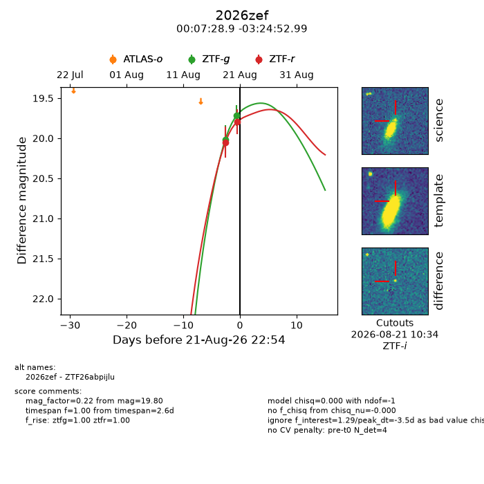
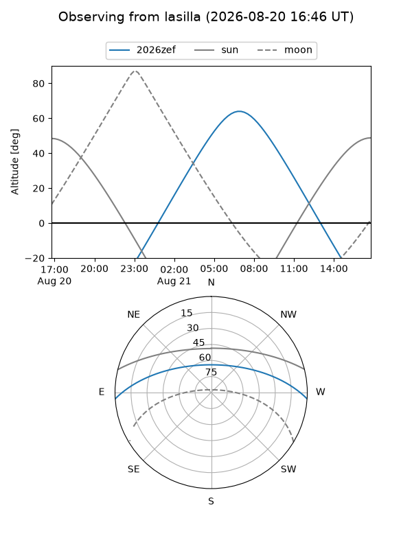
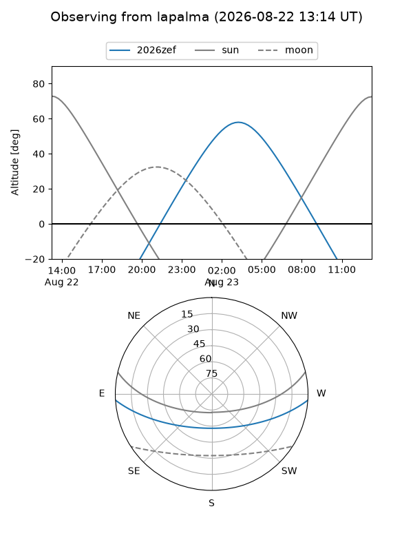
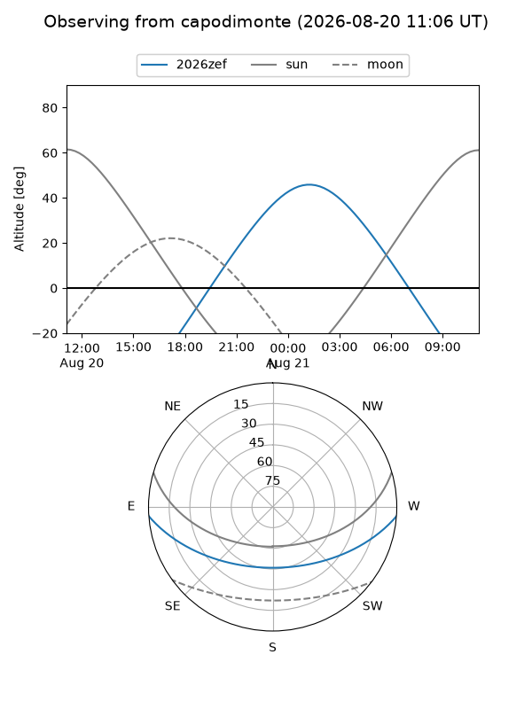
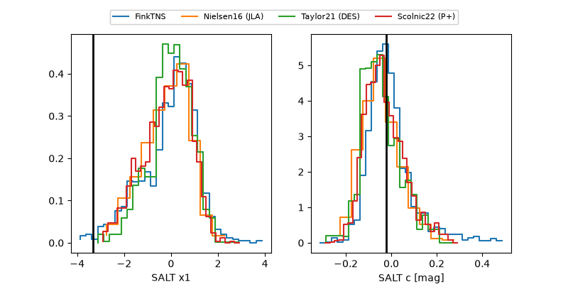

2026zef
Target 2026zef at 2026-08-21 22:57
Aliases and brokers:
FINK-ZTF: ztf.fink-portal.org/ZTF26abpijlu
Lasair-ZTF: lasair-ztf.lsst.ac.uk/objects/ZTF26abpijlu
ALeRCE-ZTF: alerce.online/object/ZTF26abpijlu
YSE-PZ: ziggy.ucolick.org/yse/transient_detail/2026zef
TNS name: wis-tns.org/object/2026zef
Direct TNS query: direct search
alt names
ZTF26abpijlu (ztf,fink_ztf)
2026zef (tns,yse)
Coordinates:
equatorial (ra, dec) = 1.8704,-3.41472
equatorial (HMS+DMS) = 00:07:28.89,-03:24:52.99
galactic (l, b) = (97.1431,-64.06323)
Flags:
TNS type: nan
peak dt: -3.5
Photometry:
last ztfg=19.72, ztfr=19.80
2 ztfg, 2 ztfr detections
Lightcurve

Visibility



Additional plots
